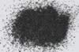

|
|
(For further information on spectroscopy, see:
http://speclab.cr.usgs.gov)
TITLE: Magnetite HS78 DESCRIPT
DOCUMENTATION_FORMAT: MINERAL
SAMPLE_ID: HS78
MINERAL_TYPE: Oxide
MINERAL: Magnetite (Spinel group)
FORMULA: Fe+2(Fe+3)2O4
FORMULA_HTML: Fe+2Fe+32O4
COLLECTION_LOCALITY: Farmington County, Colorado
ORIGINAL_DONOR: Hunt and Salisbury Collection
CURRENT_SAMPLE_LOCATION: USGS Denver Spectroscopy Laboratory
ULTIMATE_SAMPLE_LOCATION: USGS Denver Spectroscopy Laboratory
SAMPLE_DESCRIPTION:
Forms series with Gaspeite and with Siderite.
The spectrum of this sample was originally published in:
Hunt, G.R., J.W. Salisbury, and C.J. Lenhoff, 1971, Visible and near-infrared spectra of minerals and rocks: III. Oxides and hydroxides. Modern Geology, v. 2, p. 195-205.
With the note: "Magnetite, Fe3O4, is sometimes found in veins of large masses as a product of magmatic segregation, and as beds or lenses in metamorphic rocks. Most commonly, it is an accessory mineral in igneous rocks, and it is frequently associated with the heavy fraction of beach and river sands because of its resistance to weathering. As in the case of this sample, magnetite is typically an opaque spectrally featureless mineral in the visible and near-infrared. It contains both ferrous and ferric ion, and Al, V, and Cr may substitute for the Fe+3, while Ca, Mn, and Mg, Ni, Ca, and Zr may replace some Fe+2. A considerable amount of Ti can also enter the magnetite structure. Except in rare cases of substantial substitution, however, all magnetites display opaque behavior. This particular sample is titaniferous, and the explanation for its opacity must be similar to that given for ilmenite [HS231], with additional contributions being made to the general absorption property by all the substituents present."
The sample measured for the library was HS78.3 which was dry sieved to the grain size interval 74-250µm.
IMAGE_OF_SAMPLE:

END_SAMPLE_DESCRIPTION.
XRD_ANALYSIS:
40 kV - 30 mA, 7.3-9.5 keV
File: magnt78.mdi (bulk sample); magnt78b.mdi; magnt78c.mdi (non-magnetic fraction)
(All smears on quartz plate)
References: Huebner's reference patterns; PDF2 #10-0393, 16-0344, 17-0464, 18-1202,
19-0629, 19-1184, 29-0733, 33-1161, 34-0192; Deer, Howie, and Zussman (1962)
Found: Fe-rich spinel, plagioclase; traces of ilmenite, Al-rich spinel, mica, and
quartz
Comments: Pattern of bulk material consists of a set of broad, moderate to strong
peaks with no resolution of alpha1-alpha2 and a second set of sharp, weak to
moderate peaks, some with good resolution of alpha1-alpha2. The major phase is
face-centered cubic with 8.40 Angstrom cell edge, consistent with magnetite (or
magnesioferrite or a spinel-group solid solution). The non-magnetic fraction was
deciphered using pattern magnt78c.mdi. The ilmenite has lattice spacings close
to those of endmember FeTiO3 and the second FCC phase has an 8.13 Angstrom cell
edge, consistent with hercynite or spinel (the species, MgAl2O4). Reflections at
2.79 and 2.27 Angstroms were not identified. The ragged peak between 8.5 and 7.9
Angstroms is assumed to be instrumental because it appears in other patterns.
END_XRD_ANALYSIS.
COMPOSITIONAL_ANALYSIS_TYPE: None # XRF, EM(WDS), ICP(Trace), WChem
COMPOSITION_TRACE:
COMPOSITION_DISCUSSION:
None.
END_COMPOSITION_DISCUSSION.
MICROSCOPIC_EXAMINATION:
END_MICROSCOPIC_EXAMINATION.
SPECTROSCOPIC_DISCUSSION:
END_SPECTROSCOPIC_DISCUSSION.
SPECTRAL_PURITY: 1b2b3b4_ # 1= 0.2-3, 2= 1.5-6, 3= 6-25, 4= 20-150 microns
| LIB_SPECTRA_HED: | where | Wave Range | Av_Rs_Pwr | Comment |
|---|---|---|---|---|
| LIB_SPECTRA: | splib04a r 2874 | 0.2-3.0µm | 200 | g.s.= |
| LIB_SPECTRA: | splib05a r 4255 | 0.2-3.0µm | 200 | g.s.= |
| LIB_SPECTRA: | splib06a r 13233 | g.s.= | ||
| LIB_SPECTRA: | splib06a r 13246 | g.s.= |
{kind=link}